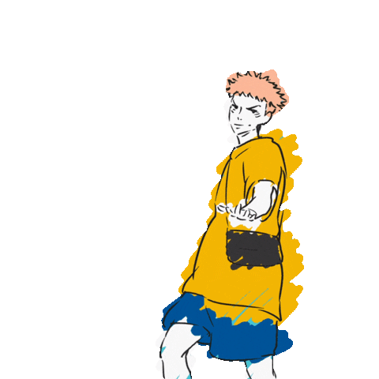
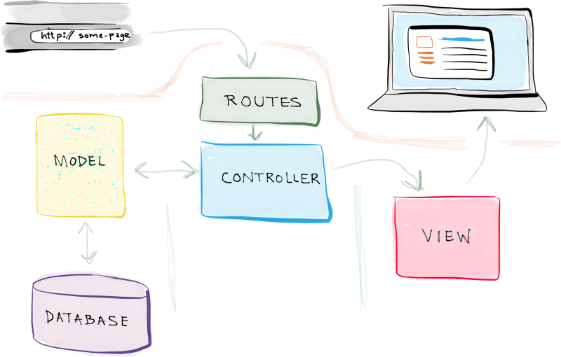

What is MVC anyway? (featuring JJK!)
Why Should You Use MVC?
Three words:
Separation of concerns (SoC)
The MVC pattern helps you separate the frontend and backend code. So, you can make changes to either side without necessarily affecting the other. This helps make updating, modifying, or debugging much more manageable.
Let's go through the process of how it works in application:
- 1. The user sits down at their computer and opens their browser. They enter in a URL or interact with a webpage and a user request is made.
- 2. The API (server) is intently waiting and listening for exactly these requests, and in fact will take different actions based on the route it's given via the request. (i.e."/home", "/login", etc).
- 3. Based on the route, the user request will be handed off to a designated Controller by the Router.
- 4. If the user's request involves retrieval of data then the Controller will instruct the Model to access the database where this data is stored.
- 5. The Model will return the data to the Controller.
- 6. The Controller will hand off what it receives from the Model to the View and the webpage will either populate or update to reflect what the user requested.
Let's add a visual:


Quiz Time ?
Congratulations! You will now be a much more organized, efficient developer.